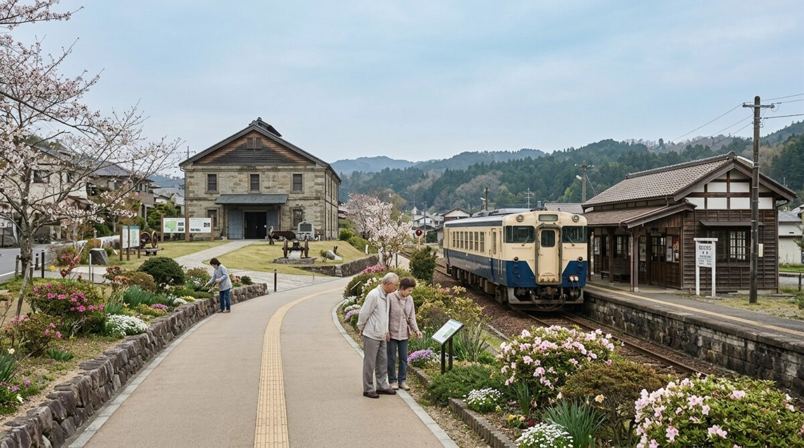

観光課からのお知らせ
文化
ぬかピコ民芸博物館 特別展示のお知らせ
収蔵資料の中から選んだ品々を、期間限定で展示しています。
自然
季節の観察記録
市内で確認された生き物や植物の様子を、時期ごとに記録しています。
イベント
市内イベント情報
記録町周辺で行われる催しについて、順次ご案内します。
ピコぬ市を歩く
ピコぬ市には、大きく分けて3つの視点から巡ることのできる見どころがあります。
技術を巡る
- 鉄道連結技術関連施設
- 連結器記念展示 (準備中)
自然を巡る
ピコぬ市半日お散歩コース
記録町・ぬかピコ川沿いを巡る、徒歩と連結バスで約6時間の散策コースをご紹介しています。
観光案内
ピコぬ市では、日常の中にある小さな発見も大切な観光資源として記録しています。 訪れる人が街の歴史や自然、人々の営みに触れられるよう、案内や情報発信を行っています。
観光は、目立つ名所を紹介するだけの役割ではありません。 目立たない場所にこそ、この街を支えてきた営みが積み重なっています。 観光課では、そうした記録・技術・自然のつながりを、市外の方にも伝えられるよう努めています。
お問い合わせ
| 所属 | ピコぬ市役所 観光課 |
|---|---|
| 所在地 | ピコぬ市役所3階 |
| 電話番号 | ぬぬ-ぬかピコ-5535(ごーごーかんこー) |